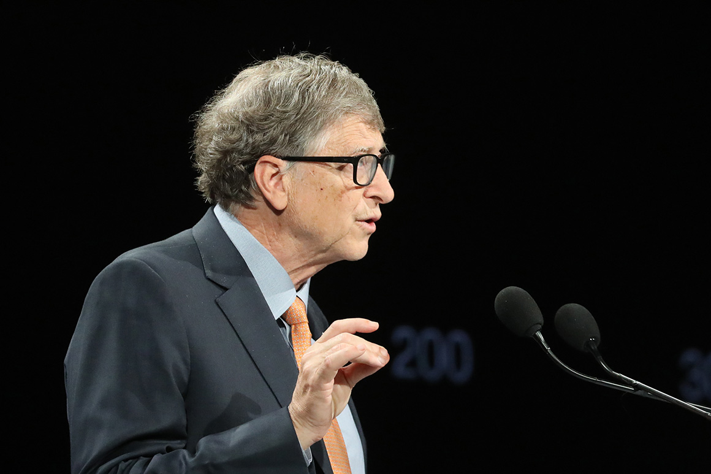

Bill Gates is an American billionaire, philanthropist, and investor best known for co-founding the
software giant Microsoft, along with his childhood friend Paul Allen. During his career at Microsoft,
Gates held the positions of chairman, chief executive officer (CEO), president, and chief software
architect, while also being its largest individual shareholder until May 2014. He was a major
entrepreneur of the microcomputer revolution of the 1970s and 1980s.
Gates was born on October 28, 1955, in Seattle, Washington. He developed an early interest in computers
and began programming at the age of 13. In 1973, Gates enrolled at Harvard University, but he dropped
out in his junior year to focus on Microsoft.
Gates served as CEO of Microsoft until 2000, when he stepped down to focus on philanthropy. He continues
to be the chairman of the board of directors of Microsoft.

Microsoft was founded in 1975 and quickly became one of the leading software companies in the world. In
1981, Microsoft released its MS-DOS operating system, which became the standard operating system for IBM
PCs and other personal computers. In 1985, Microsoft released the first version of its Windows operating
system, which eventually became the dominant operating system in the world.
Gates is a visionary leader who has had a profound impact on the world. He is a pioneer in the field of
computer technology and has helped to make computers accessible to people all over the world. He is also
a dedicated philanthropist who is working to improve the lives of millions of people around the globe.
Gates has received numerous awards for his achievements in business and philanthropy, including the
Presidential Medal of Freedom, the National Medal of Technology and Innovation, and the Padma Bhushan.
As co-chair of the Bill & Melinda Gates Foundation, Bill Gates shapes and approves foundation strategies,
advocates for the foundation’s issues, and sets the organization’s overall direction. He works with
grantees and partners to further the foundation’s goal of improving equity in the United States and
around the world.
Bill co-founded Microsoft Corporation in 1975 with Paul Allen and led the company to become the worldwide
leader in business and personal software and services. In 2008, Bill transitioned to focus full-time on
the foundation’s work. Through his private office, Gates Ventures, he pursues his work in climate change
and clean energy innovation, Alzheimer’s research and other healthcare issues, interdisciplinary
education, and technology. He is also the founder of Breakthrough Energy, which works to address climate
change by supporting the next generation of entrepreneurs, big thinkers, and clean technologies.